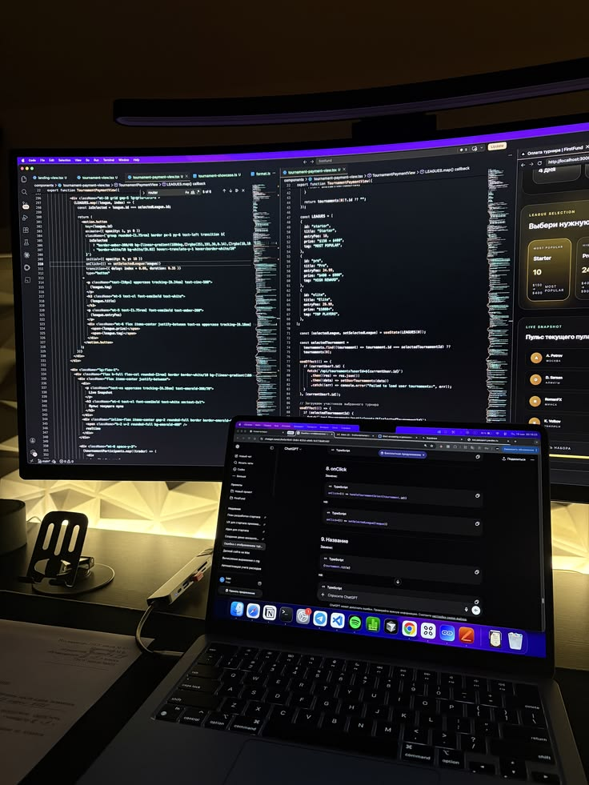
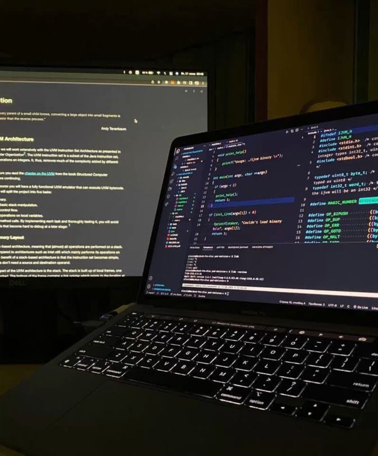

Entre códigos, bugs e café, alguns registros da rotina de quem
transforma ideias em software.

Algumas linhas de código e provavelmente alguns bugs.

Onde tudo começa café, código e algumas ideias.
Vídeo sobre a rotina de um programador trabalhando de casa.
Entre código e reuniões um dia na vida de um desenvolvedor.
Deep Focus Mix para programação e codificação.Música para Estudar e manter o Foco.